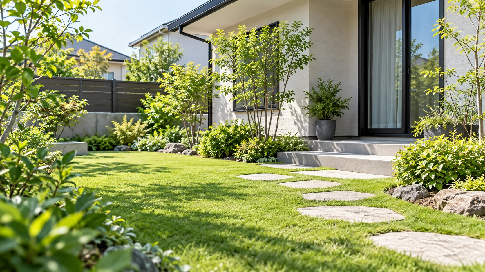
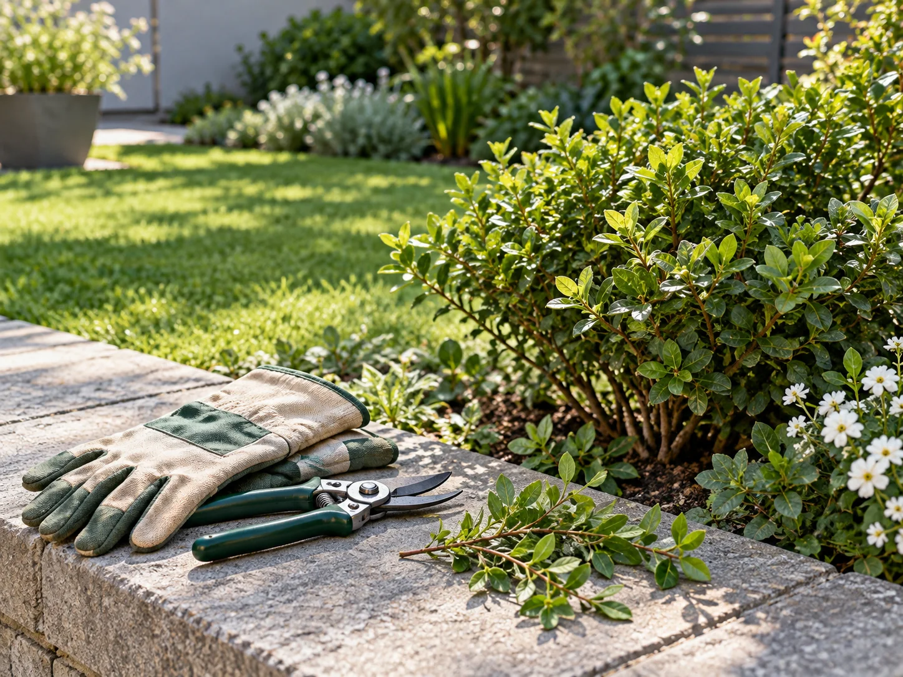

草刈り・除草
伸びた雑草や気になる草まわり。刈払機や手作業によるお手入れをご相談いただけます。
庭・空き地・駐車場GREENWORK MIYAKO / FUKUOKA
伸びてきた草も、気になる庭木も。
福岡県東部の小さなお庭仕事を、
グリーンワークみやこにご相談ください。
送信しないお問い合わせデモ

AREA福岡県東部
SCHEDULE土日祝を中心に対応
WORK草刈り・除草・庭木のお手入れ
01 / OUR WORK
ご自宅のお庭から、空き地・駐車場まで。
小規模なお手入れのご相談に。
伸びた雑草や気になる草まわり。刈払機や手作業によるお手入れをご相談いただけます。
庭・空き地・駐車場高さ2〜3m程度までの庭木・雑木の剪定や小規模な伐採のご相談に対応。
高さ2〜3m程度までお住まいの地域や広さ、お庭の写真をもとに、必要なお手入れについてご相談ください。
内容・日程は個別に確認
02 / NEAR YOUR GARDEN
北九州市東部・苅田・行橋・みやこ・添田を中心とする福岡県東部が対応エリアです。
主に土日祝に対応
作業の可否・料金・日程・刈り草や枝の処分方法は、事前の確認が必要です。
03 / FIRST STEP
市町村と、おおよその広さを整理します。
草や木の様子、周囲の状況を確認します。
作業範囲や日程などを相談します。
LET’S TALK ABOUT YOUR GARDEN
この見本では、ご相談の流れを体験できます。
入力内容は送信・保存されません。